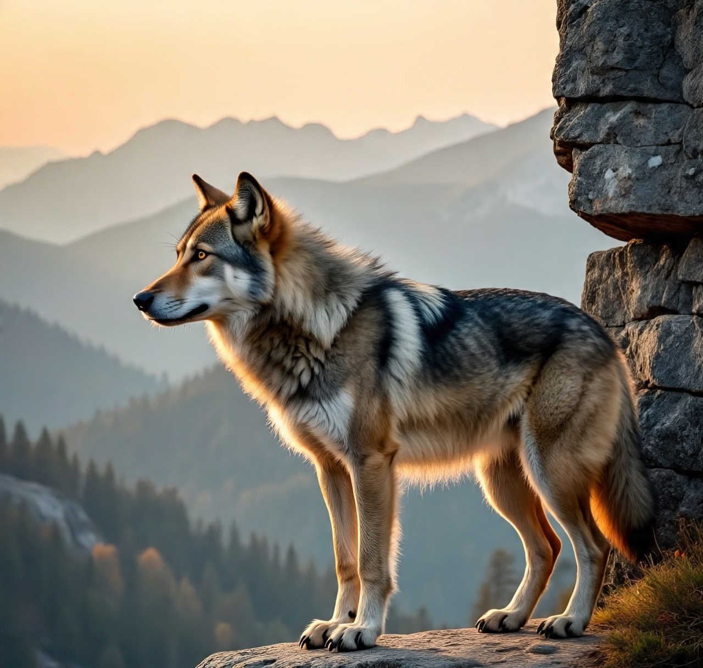
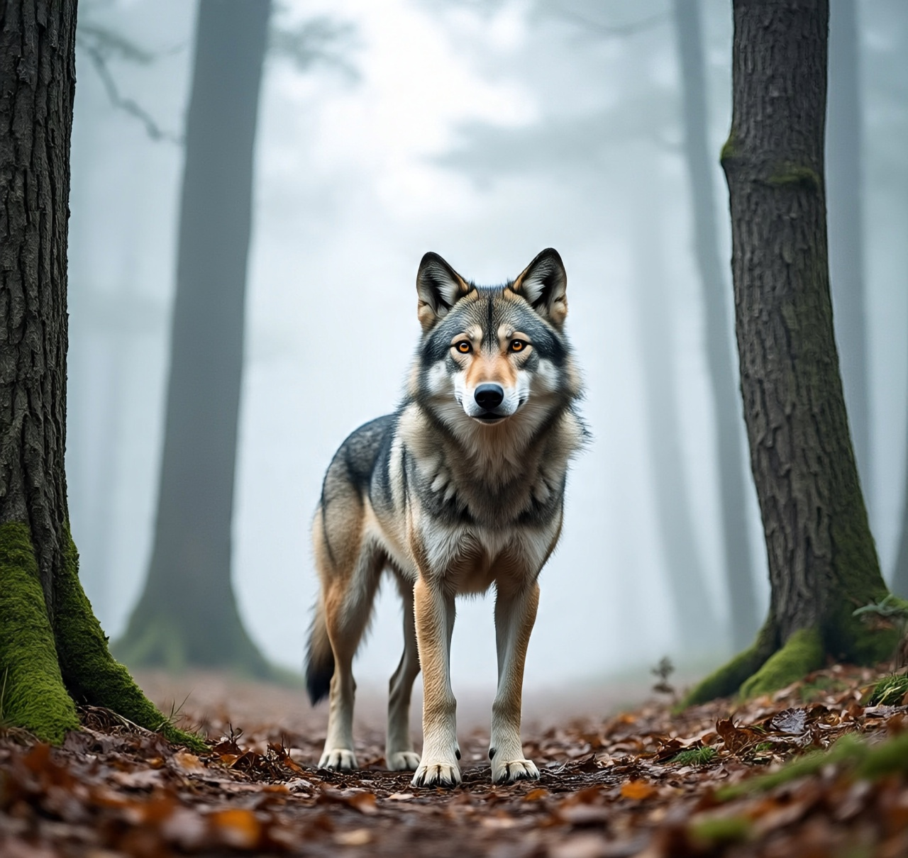

Chapter One
Loneliness
In the world 🌎 full of wonderful creatures, from the lion 🦁 to the tiger 🐯 to the elephant 🐘 to the ones which dwells in the ocean 🌊 like the wild shark 🦈, the octopus 🐙, the fishes 🐠🐟, the jellyfish and the flying creatures like the eagle 🦅, the raven 🐦⬛ and others.
These creatures have their unique characteristics, they move in packs but one is always left out and that one is the one we call the LONE WOLF.

Chapter Two
What Happened
It all started when a wolf has lower ability or is lost but nevertheless is a member of the pack meant to be left out because they are all of the same species and they are like one family, so leaving one person behind is like building up a rival between two parties.
The wolf left out also known as the lone wolf might find it difficult to adapt to the new changes in its environment, but if it definitely gets used to the environment it will be more exposed than others in the pack because he will learn different ways of living and he will be able to know how all animals behave and how to relate with them.
